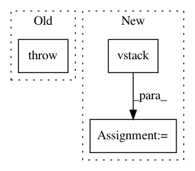

e55d197979ad763a935b4418ed5d0660d8ce056c,geomstats/visualization.py,PoincareHalfPlane,draw,#PoincareHalfPlane#Any#,198
Before Change
return poincare_half_plane_coords
def draw(self, ax, **kwargs):
raise NotImplementedError()
class KleinDisk():
def __init__(self, points=None):
After Change
return poincare_half_plane_coords
def draw(self, ax, **kwargs):
points_x = gs.vstack([point[0] for point in self.points])
points_y = gs.vstack([point[1] for point in self.points])
ax.scatter(points_x, points_y, **kwargs)
In pattern: SUPERPATTERN
Frequency: 3
Non-data size: 3
Instances
Project Name: geomstats/geomstats
Commit Name: e55d197979ad763a935b4418ed5d0660d8ce056c
Time: 2018-07-30
Author: ninamio78@gmail.com
File Name: geomstats/visualization.py
Class Name: PoincareHalfPlane
Method Name: draw
Project Name: scipy/scipy
Commit Name: 16d08e188b6db8a5ed0c16df16906a0e197d6505
Time: 2014-02-02
Author: perimosocordiae@gmail.com
File Name: scipy/sparse/dia.py
Class Name: dia_matrix
Method Name: setdiag
Project Name: automl/SMAC3
Commit Name: c8dd8ffd75126553747aa86746c890fcfcf50332
Time: 2017-04-10
Author: marius.rks@googlemail.com
File Name: smac/epm/base_epm.py
Class Name: AbstractEPM
Method Name: predict